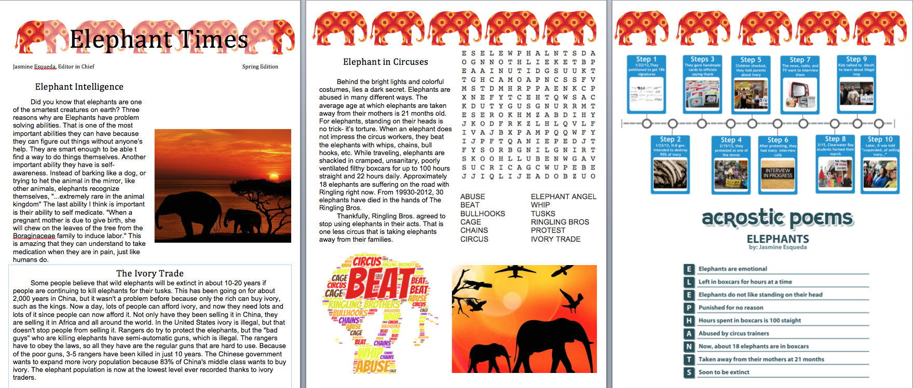
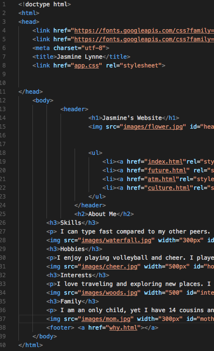

In 6th grade, we really focused on typing at a faster pace and knowing all of the letters without having to look down at them. In addition to that, we also experiment with coding art and made different kinds of animals and objects in Khan Academy. We also learned how to design newsletters in Microsoft Words. To make sure we are safe on the internet, we learned lots about cyber safety and they cause and effects about it. We made sure we weren't going off of sites that could possibly give the computer a virus, or come in contact with any stranger on the internet.

7th Grade
During 7th grade, I learned how to operate Photoshop, Illustrator, Sketchup, In Design, and Floorpanner. In photoshop, we played around with different effects and learned multiple tools to use. In In Design, we created a magazine from scratch and learned how to make it look professional. In sketchup, we learned how to create furniture from scratch and make it look 3D. Not only did we learn how to design furniture, but we also designed houses and other tiny details. We learned how to create logos in Illustrator during 7th grade. Last but definitely not least, we worked in Floorplanner where we scaled down a classroom in Bancroft Middle School. We measured different lengths of the classroom and scaled the size.
8th Grade
Though I have not been in 8th grade for a long time, I still have learned so much! Already, I am advanced in HTML and CSS coding. We used different websites that taught us lessons, such as Dash, Khan Academy and Visual Studio Code. In addition to coding, there is a humongous difference when I first typed in 6th grade, and how fast I type now. I can type around 57 WPM during a 5 minute typing test.

Reflection
During my 3 years of being in ATM, my mindset has expanded. I have learned so much that could help me in the future. I learned how to work in a team, and be a leader, and I also learned skills that may persuade my future. The teachers have helped me along this crazy journey. I am so grateful for them because they have taught me everything I know.
In 8th grade, we learned how to create and edit videos in iMovie. I submitted my video into a competition, hoping I will get recognition for my hard work and dedication that I put into my video. I learned how to do multiple film shots and angles to shoot at. I also learned how to use transitions and voice overs, which improved my video. I also learned how to put background music into my video which creates more feeling.
As well, we learned how to apply music to videos and create new music in GarageBand. We were given a silent video, with absolutely no sound. We then put the video in GarageBand and edited the sounds so that the video was entertaining with sound.